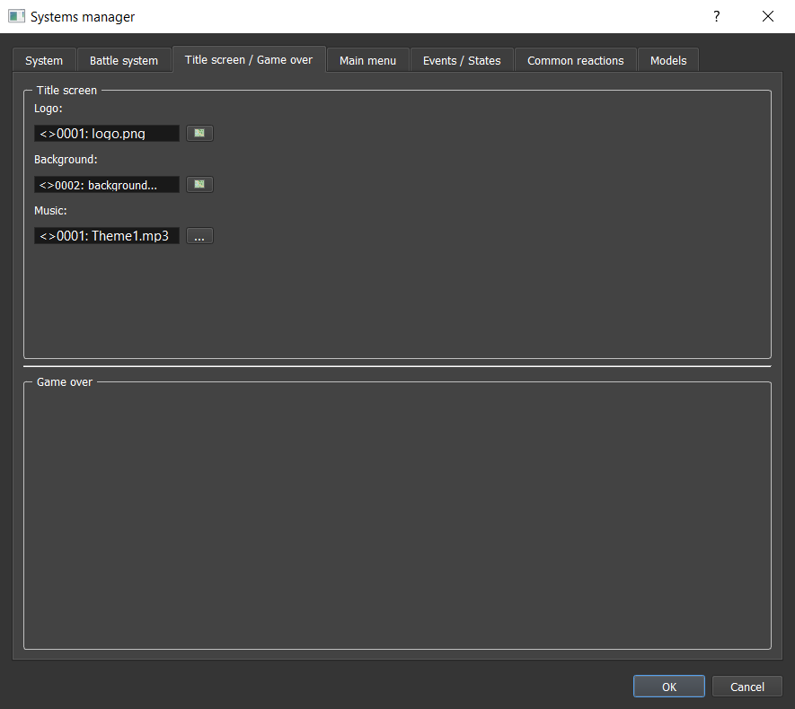
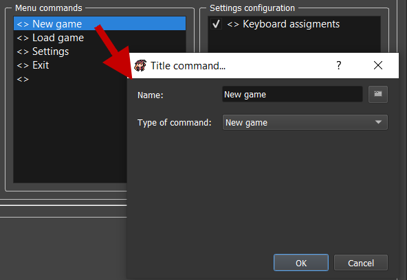

Title Screen & Game Over
Got to Systems datas > Title screen / Game over:

Title Screen
In the first section, you can edit some of the title screen properties.
Background
Image: Picture used for title screen background.Video: Video used for title screen background.
Menu commands
Music: Music used when player is in title screen.
Menu commands
Customize here the commands to display in the title screen.

Name: The displayed text ingame.Type of command: The type of command.New game: Run a new game.Load game: Open saves menu.Options: Open the settings menu.Exit: Quit game.Script: Excecute custom script that can be entered in the appropriate textarea.
Settings configuration

-
Settings configuration: The settings menu can be customized here by reordering and / or displaying some of the options.Keyboard assignments: Configuration of the keyboard assignements proposed in theKeyboard manager.

Game Over
Not available yet.